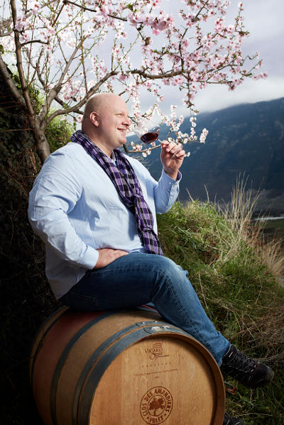
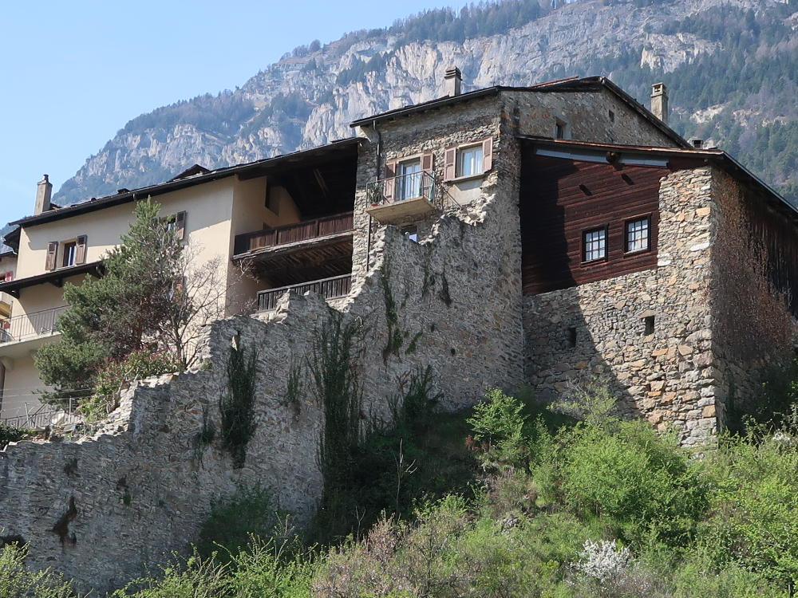

le vigneron
une poignée de main solide t’accueille chaleureusement tout comme son accent et à son écoute tu pars aussitôt à travers ses vins dans le vignoble de fully que tu viens de côtoyer
au dehors d’un côté très cool, alexandre delétraz est un grand professionnel reconnu qui ne cherchera pas à t’éblouir avec des théories de « bistrots » mais te racontera ses vignes et son vin, délices que la dégustation suffira à te convaincre que t’es pas seul à apprécier son talent (gault & millau 2017 les 100 meilleurs vignerons de suisse)
déguster
petite arvine de fully 2015
moins marquée que celle ci-dessous, mais avec un goût franc et frais, parfaite même pour un apéro ou une brisolée
et pour ceux qui ignorent encore ce qu’est une petite arvine voilà une occasion de faire sa connaissance
petite arvine les seyes 2014 (barrique)
magnifique bouquet et arômes très riches
mariage parfait avec la cuisine japonaise
un vrai régal digne des grandes tables qu’elle fréquente déjà
amigne 2014
une gâterie tout en finesse et en velours qui finira un bon repas avec une note de soleil excellent mariage avec des crevettes sauce vanillée
un vin que t’auras plaisir à faire découvrir à tes amis
gamay vieilles vignes
un bon gamay qui vous réconcilie avec le vrai gamay
superbe, on lit deux fois l’étiquette pour être certain de l’appellation valaisanne
ira très bien avec un viande rouge avec une sauce aux bolets ou un poulet fermier à l’estragon
découverte
syrah 2013
elle seule vaut le détour !
longue en bouche, fruitée, enchanteresse, un vrai plaisir de gastronome
pour finir un bon repas sur une touche élégante
le passage en fût est très discret
millésimes 2016
j’ai eu le privilège de les déguster à la cuve : cela s’annonce rude de bien !
qui ?
Alexandre Delétraz
Cave des Amandiers
Route des Moulins 9
1913 Saillon
027 746 22 01- 079 348 94 63 - info@cavedesamandiers.ch - www.cavedesamandiers.ch
y aller
après avoir croisé trois éoliennes vous prenez la sortie de saxon et direction saillon
à travers vignes et arbres fruitiers, vous arrivez à new saillon
quelques panneaux attirent votre attention : sentier farinet, musée de la fausse monnaie, bourg
au giratoire, vous avez le choix d’aller à droite aux bains de saillon et en faisant le tour vous verrez les indications bourg et cave des amandiers
faisons les choses dans l’ordre d’urgence donc tout de suite après la sortie du giratoire à droite la rue des moulins et la cave des amandiers
à part trois vrais amandiers et quelques tuyaux et quelques ceps usagés, rien n’indique que vous êtes arrivés hormis le panneau sur la grande porte de la cave
passé celle-ci, le bonheur

le resto
puis, pour vous remettre de vos émotions vinicoles, allez voir le bourg en haut dessus
vous aurez l’impression d’être au tessin ou dans un des villages perchés que l’on visite en provence d’autant que sur la place en face de la maison de commune vous trouverez sous les arbres les trois cafés dont le nuovo bourg avec une cuisine très fine et soignée du chef grégoire antonin (15/20 gault & millau 2017) avec une bonne proposition de vins de la région
Restaurant Nouvo Bourg
Rue du Bourg 25
1913 Saillon – 027 744 14 30 – www.nouvobourg.ch
sympa
…et, après avoir bien humecté l’intérieur vous pouvez passer à l’extérieur en prenant à nouveau le giratoire et en tournant à droite cette fois pour vous fondre dans les bras bleus des bains de saillon et comme dit notre poète gilles vous allez regretter que « ces bons valaisans n’aient pas mis du vin dans ces eaux-là »